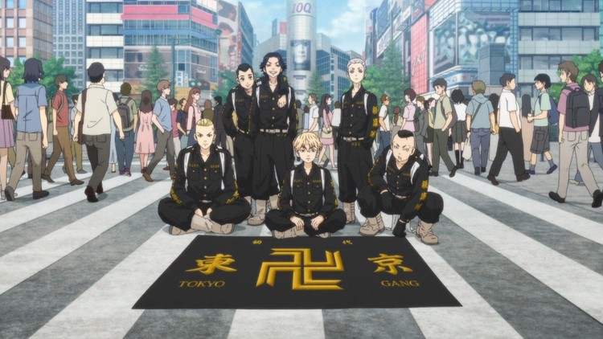

Takemichi Hanagaki, um freeter de 26 anos sem esperança na vida, descobre um dia que sua ex-namorada no colégio, Hinata Tachibana, assim como seu irmão mais novo Naoto, são mortos pela Gangue Tokyo Manji. Quando Takemichi é empurrado na frente de um trem, ele viaja no tempo para exatamente 12 anos atrás, em 2005. Takemichi revive seus anos de ensino médio, e depois de revelar a Naoto que Hinata vai morrer, Takemichi é repentinamente transportado de volta ao presente, criando um paradoxo de tempo onde Naoto sobrevive e agora é um detetive. Naoto deduz que Takemichi é capaz de viajar 12 anos no passado quando eles dão as mãos, e usando o conhecimento do passado, Takemichi jura salvar Hinata.
Ken Wakui é um artista japonês de mangá, ele fez sua estréia em 2005 com "Shinjuku Host" publicado na Bessatsu Young Magazine (Kodansha), e fez sua estréia em série com "Shinjuku Swan", que começou no mesmo ano na Weekly Young Magazine (Kodansha). Em 2015, mudou-se para a Weekly Shonen Magazine. Em 2015, ele mudou-se para a Weekly Shonen Magazine, onde está atualmente serializando "Tokyo Revengers (Manga)" em agosto de 2020.
O manji é o símbolo da gangue e faz parte do seu nome. O problema é que manji é o japonês para a suástica, signo marcado na memória mundial, especialmente ocidental, por ser usado como ícone do partido nazista alemão. Ele tem algumas diferenças em design da “versão” nazista, possui um significado completamente distinto e milenar, mas o símbolo, em si, é o mesmo.
Para a Tokyo Manji Gang, o símbolo carrega o significado original, que fala sobre boa sorte e prosperidade – algo que o grupo emprega, de certa forma, em seu dia a dia, com reuniões feitas em um templo budista e levando uma vida de gangue mais “leve” e livre. Mas, para qualquer desavisado, basta um olhar para imaginar que essa é uma história sobre um grupo de jovens neonazi.
Enquanto no Japão e Ásia o manji, ou suástica, significa algo positivo, divino e ainda hoje é visto e usado dessa maneira, no ocidente o signo foi roubado e deturpado para representar um grupo e ideologia hediondos. É até irônico pensar que pessoas que prezavam tanto por uma “raça pura” se apossaram de um símbolo estrangeiro para ressignificá-lo. Irônico e triste.
Escrito e ilustrado por Ken Wakui, o mangá de Tokyo Revengers estreou na revista da editora Kodansha Weekly Shōnen Magazine em 1 de março de 2017.

O perfil oficial do mangá Tokyo Revengers anunciou, nesta quinta-feira (22), que existem mais de 32 milhões de cópias em circulação. Após a estreia do anime, que está disponível na Crunchyroll, houve um aumento de 670% nas vendas, conforme revelado pela Kodansha em maio deste ano.
Em 11 de Abril de 2021 a obra obteve uma adaptação em anime, e ela estreou na Crunchyroll e outras plataformas.
No dia 19 de Setembro de 2021, Tokyo Revengers chega ao seu "último episódio", terminando o arco da Valhalla. O anime terminou com 24 episódios, e ainda não temos nenhum anunciamento oficial sobre uma 2ª temporada, mas devido às vendas do mangá terem sido altas, podemos presumir que a obra terá uma nova temporada em um futuro bem próximo.
Em Junho de 2021 o mangá entrou no arco final, e está nele até o momento, isso deixou os fãs felizes e tristes ao mesmo tempo, pois esse ultímo arco está bem emocionante e cheio de reviravoltas, a única coisa ruim é que isso significa que nossa amada obra já está chegando no seu fim.